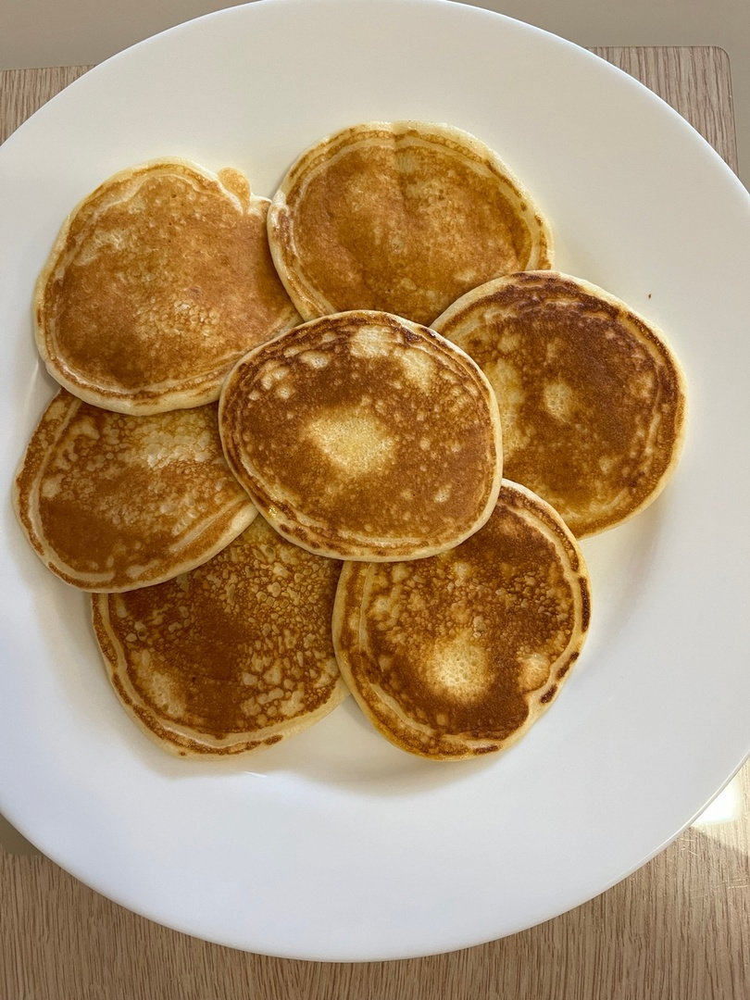

ОЛАДЬИ С БАНАНОМ
Воздушные оладушки - старинное блюдо русской кухни. В меру сладкие, нежные, маленькие и круглые - эти кулинарные изделия завоевали любовь каждого ребенка.
КБЖУ на 1 порцию - 423/35/17/32Время приготовления - 20 минут
Сложность - легко
ИНГРИДИЕНТЫ НА 1 ПОРЦИИЮ:
- Молоко - 50мл
- Яйцо - 1шт
- Мука (пшеничная или рисовая) - 70гр
- Банан - половинка
- Масло для смазывания сковороды - 5гр
СПОСОБ ПРИГОТОВЛЕНИЯ:
Шаг 1:
Отделяем желток от белка. Желток смешваем с мукой и молоком.
Шаг 2:
Белок взбиваем до жёстких пиков.
Шаг 3:
Взбитый белок перемешиваем с тестом.
Шаг 4:
Режем банан на мелкие кусочки.
Шаг 5:
Разогреваем сковороду, смазываем маслом, ложкой выкладываем тесто, сверху выкладывам мелко нарезанный банан, и сверху закрываем тестом. Обжариваем оладушки с двух сторон.
Подаём со сметаной/сгущёнкой/вареньем.
ПРИЯТНОГО АППЕТИТА!